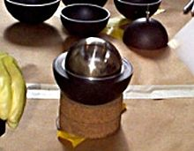
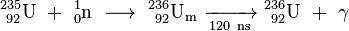

Neptunium
|  | |||||||||||||||||||||||||||||||||||||||||||||||||||||||||||||||||||||||||||||||||||||||||||||||||||||||||||||||||||||||||||||||||||||||||||||||||||||||||||||||||||||||||||||||||||||||||||||||||||||||||||||||||||||||||||||||||||||
| General properties | |||||||||||||||||||||||||||||||||||||||||||||||||||||||||||||||||||||||||||||||||||||||||||||||||||||||||||||||||||||||||||||||||||||||||||||||||||||||||||||||||||||||||||||||||||||||||||||||||||||||||||||||||||||||||||||||||||||
|---|---|---|---|---|---|---|---|---|---|---|---|---|---|---|---|---|---|---|---|---|---|---|---|---|---|---|---|---|---|---|---|---|---|---|---|---|---|---|---|---|---|---|---|---|---|---|---|---|---|---|---|---|---|---|---|---|---|---|---|---|---|---|---|---|---|---|---|---|---|---|---|---|---|---|---|---|---|---|---|---|---|---|---|---|---|---|---|---|---|---|---|---|---|---|---|---|---|---|---|---|---|---|---|---|---|---|---|---|---|---|---|---|---|---|---|---|---|---|---|---|---|---|---|---|---|---|---|---|---|---|---|---|---|---|---|---|---|---|---|---|---|---|---|---|---|---|---|---|---|---|---|---|---|---|---|---|---|---|---|---|---|---|---|---|---|---|---|---|---|---|---|---|---|---|---|---|---|---|---|---|---|---|---|---|---|---|---|---|---|---|---|---|---|---|---|---|---|---|---|---|---|---|---|---|---|---|---|---|---|---|---|---|---|---|---|---|---|---|---|---|---|---|---|---|---|---|---|---|---|
| Name, symbol | neptunium, Np | ||||||||||||||||||||||||||||||||||||||||||||||||||||||||||||||||||||||||||||||||||||||||||||||||||||||||||||||||||||||||||||||||||||||||||||||||||||||||||||||||||||||||||||||||||||||||||||||||||||||||||||||||||||||||||||||||||||
| Pronunciation | UK /nɛpˈtjuːniəm/, US /nɛpˈtuːniəm/ nep-TEW-nee-əm, nep-TOO-nee-əm |
||||||||||||||||||||||||||||||||||||||||||||||||||||||||||||||||||||||||||||||||||||||||||||||||||||||||||||||||||||||||||||||||||||||||||||||||||||||||||||||||||||||||||||||||||||||||||||||||||||||||||||||||||||||||||||||||||||
| Appearance | silvery metallic | ||||||||||||||||||||||||||||||||||||||||||||||||||||||||||||||||||||||||||||||||||||||||||||||||||||||||||||||||||||||||||||||||||||||||||||||||||||||||||||||||||||||||||||||||||||||||||||||||||||||||||||||||||||||||||||||||||||
| Neptunium in the periodic table | |||||||||||||||||||||||||||||||||||||||||||||||||||||||||||||||||||||||||||||||||||||||||||||||||||||||||||||||||||||||||||||||||||||||||||||||||||||||||||||||||||||||||||||||||||||||||||||||||||||||||||||||||||||||||||||||||||||
|
|||||||||||||||||||||||||||||||||||||||||||||||||||||||||||||||||||||||||||||||||||||||||||||||||||||||||||||||||||||||||||||||||||||||||||||||||||||||||||||||||||||||||||||||||||||||||||||||||||||||||||||||||||||||||||||||||||||
| Atomic number | 93 | ||||||||||||||||||||||||||||||||||||||||||||||||||||||||||||||||||||||||||||||||||||||||||||||||||||||||||||||||||||||||||||||||||||||||||||||||||||||||||||||||||||||||||||||||||||||||||||||||||||||||||||||||||||||||||||||||||||
| Standard atomic weight | (237) | ||||||||||||||||||||||||||||||||||||||||||||||||||||||||||||||||||||||||||||||||||||||||||||||||||||||||||||||||||||||||||||||||||||||||||||||||||||||||||||||||||||||||||||||||||||||||||||||||||||||||||||||||||||||||||||||||||||
| Element category | actinide | ||||||||||||||||||||||||||||||||||||||||||||||||||||||||||||||||||||||||||||||||||||||||||||||||||||||||||||||||||||||||||||||||||||||||||||||||||||||||||||||||||||||||||||||||||||||||||||||||||||||||||||||||||||||||||||||||||||
| Group, block | group n/a, f-block | ||||||||||||||||||||||||||||||||||||||||||||||||||||||||||||||||||||||||||||||||||||||||||||||||||||||||||||||||||||||||||||||||||||||||||||||||||||||||||||||||||||||||||||||||||||||||||||||||||||||||||||||||||||||||||||||||||||
| Period | period 7 | ||||||||||||||||||||||||||||||||||||||||||||||||||||||||||||||||||||||||||||||||||||||||||||||||||||||||||||||||||||||||||||||||||||||||||||||||||||||||||||||||||||||||||||||||||||||||||||||||||||||||||||||||||||||||||||||||||||
| Electron configuration | [Rn] 5f4 6d1 7s2 | ||||||||||||||||||||||||||||||||||||||||||||||||||||||||||||||||||||||||||||||||||||||||||||||||||||||||||||||||||||||||||||||||||||||||||||||||||||||||||||||||||||||||||||||||||||||||||||||||||||||||||||||||||||||||||||||||||||
| per shell | 2, 8, 18, 32, 22, 9, 2 | ||||||||||||||||||||||||||||||||||||||||||||||||||||||||||||||||||||||||||||||||||||||||||||||||||||||||||||||||||||||||||||||||||||||||||||||||||||||||||||||||||||||||||||||||||||||||||||||||||||||||||||||||||||||||||||||||||||
| Physical properties | |||||||||||||||||||||||||||||||||||||||||||||||||||||||||||||||||||||||||||||||||||||||||||||||||||||||||||||||||||||||||||||||||||||||||||||||||||||||||||||||||||||||||||||||||||||||||||||||||||||||||||||||||||||||||||||||||||||
| Phase | solid | ||||||||||||||||||||||||||||||||||||||||||||||||||||||||||||||||||||||||||||||||||||||||||||||||||||||||||||||||||||||||||||||||||||||||||||||||||||||||||||||||||||||||||||||||||||||||||||||||||||||||||||||||||||||||||||||||||||
| Melting point | 912±3 K (639±3 °C, 1182±5 °F) | ||||||||||||||||||||||||||||||||||||||||||||||||||||||||||||||||||||||||||||||||||||||||||||||||||||||||||||||||||||||||||||||||||||||||||||||||||||||||||||||||||||||||||||||||||||||||||||||||||||||||||||||||||||||||||||||||||||
| Boiling point | 4447 K (4174 °C, 7545 °F) (extrapolated) | ||||||||||||||||||||||||||||||||||||||||||||||||||||||||||||||||||||||||||||||||||||||||||||||||||||||||||||||||||||||||||||||||||||||||||||||||||||||||||||||||||||||||||||||||||||||||||||||||||||||||||||||||||||||||||||||||||||
| Density near r.t. | alpha: 20.45 g·cm−3[1] accepted standard value: 19.38 g·cm−3 |
||||||||||||||||||||||||||||||||||||||||||||||||||||||||||||||||||||||||||||||||||||||||||||||||||||||||||||||||||||||||||||||||||||||||||||||||||||||||||||||||||||||||||||||||||||||||||||||||||||||||||||||||||||||||||||||||||||
| Heat of fusion | 5.19 kJ·mol−1 | ||||||||||||||||||||||||||||||||||||||||||||||||||||||||||||||||||||||||||||||||||||||||||||||||||||||||||||||||||||||||||||||||||||||||||||||||||||||||||||||||||||||||||||||||||||||||||||||||||||||||||||||||||||||||||||||||||||
| Heat of vaporization | 336 kJ·mol−1 | ||||||||||||||||||||||||||||||||||||||||||||||||||||||||||||||||||||||||||||||||||||||||||||||||||||||||||||||||||||||||||||||||||||||||||||||||||||||||||||||||||||||||||||||||||||||||||||||||||||||||||||||||||||||||||||||||||||
| Molar heat capacity | 29.46 J·mol−1·K−1 | ||||||||||||||||||||||||||||||||||||||||||||||||||||||||||||||||||||||||||||||||||||||||||||||||||||||||||||||||||||||||||||||||||||||||||||||||||||||||||||||||||||||||||||||||||||||||||||||||||||||||||||||||||||||||||||||||||||
vapor pressure
|
|||||||||||||||||||||||||||||||||||||||||||||||||||||||||||||||||||||||||||||||||||||||||||||||||||||||||||||||||||||||||||||||||||||||||||||||||||||||||||||||||||||||||||||||||||||||||||||||||||||||||||||||||||||||||||||||||||||
| Atomic properties | |||||||||||||||||||||||||||||||||||||||||||||||||||||||||||||||||||||||||||||||||||||||||||||||||||||||||||||||||||||||||||||||||||||||||||||||||||||||||||||||||||||||||||||||||||||||||||||||||||||||||||||||||||||||||||||||||||||
| Oxidation states | 7, 6, 5, 4, 3 (an amphoteric oxide) | ||||||||||||||||||||||||||||||||||||||||||||||||||||||||||||||||||||||||||||||||||||||||||||||||||||||||||||||||||||||||||||||||||||||||||||||||||||||||||||||||||||||||||||||||||||||||||||||||||||||||||||||||||||||||||||||||||||
| Electronegativity | Pauling scale: 1.36 | ||||||||||||||||||||||||||||||||||||||||||||||||||||||||||||||||||||||||||||||||||||||||||||||||||||||||||||||||||||||||||||||||||||||||||||||||||||||||||||||||||||||||||||||||||||||||||||||||||||||||||||||||||||||||||||||||||||
| Ionization energies | 1st: 604.5 kJ·mol−1 | ||||||||||||||||||||||||||||||||||||||||||||||||||||||||||||||||||||||||||||||||||||||||||||||||||||||||||||||||||||||||||||||||||||||||||||||||||||||||||||||||||||||||||||||||||||||||||||||||||||||||||||||||||||||||||||||||||||
| Atomic radius | empirical: 155 pm | ||||||||||||||||||||||||||||||||||||||||||||||||||||||||||||||||||||||||||||||||||||||||||||||||||||||||||||||||||||||||||||||||||||||||||||||||||||||||||||||||||||||||||||||||||||||||||||||||||||||||||||||||||||||||||||||||||||
| Covalent radius | 190±1 pm | ||||||||||||||||||||||||||||||||||||||||||||||||||||||||||||||||||||||||||||||||||||||||||||||||||||||||||||||||||||||||||||||||||||||||||||||||||||||||||||||||||||||||||||||||||||||||||||||||||||||||||||||||||||||||||||||||||||
| Miscellanea | |||||||||||||||||||||||||||||||||||||||||||||||||||||||||||||||||||||||||||||||||||||||||||||||||||||||||||||||||||||||||||||||||||||||||||||||||||||||||||||||||||||||||||||||||||||||||||||||||||||||||||||||||||||||||||||||||||||
| Crystal structure | orthorhombic | ||||||||||||||||||||||||||||||||||||||||||||||||||||||||||||||||||||||||||||||||||||||||||||||||||||||||||||||||||||||||||||||||||||||||||||||||||||||||||||||||||||||||||||||||||||||||||||||||||||||||||||||||||||||||||||||||||||
| Thermal conductivity | 6.3 W·m−1·K−1 | ||||||||||||||||||||||||||||||||||||||||||||||||||||||||||||||||||||||||||||||||||||||||||||||||||||||||||||||||||||||||||||||||||||||||||||||||||||||||||||||||||||||||||||||||||||||||||||||||||||||||||||||||||||||||||||||||||||
| Electrical resistivity | 1.220 µΩ·m (22 °C) | ||||||||||||||||||||||||||||||||||||||||||||||||||||||||||||||||||||||||||||||||||||||||||||||||||||||||||||||||||||||||||||||||||||||||||||||||||||||||||||||||||||||||||||||||||||||||||||||||||||||||||||||||||||||||||||||||||||
| Magnetic ordering | paramagnetic[2] | ||||||||||||||||||||||||||||||||||||||||||||||||||||||||||||||||||||||||||||||||||||||||||||||||||||||||||||||||||||||||||||||||||||||||||||||||||||||||||||||||||||||||||||||||||||||||||||||||||||||||||||||||||||||||||||||||||||
| CAS Registry Number | 7439-99-8 | ||||||||||||||||||||||||||||||||||||||||||||||||||||||||||||||||||||||||||||||||||||||||||||||||||||||||||||||||||||||||||||||||||||||||||||||||||||||||||||||||||||||||||||||||||||||||||||||||||||||||||||||||||||||||||||||||||||
| History | |||||||||||||||||||||||||||||||||||||||||||||||||||||||||||||||||||||||||||||||||||||||||||||||||||||||||||||||||||||||||||||||||||||||||||||||||||||||||||||||||||||||||||||||||||||||||||||||||||||||||||||||||||||||||||||||||||||
| Naming | after planet Neptune, itself named after Roman god of the sea Neptune | ||||||||||||||||||||||||||||||||||||||||||||||||||||||||||||||||||||||||||||||||||||||||||||||||||||||||||||||||||||||||||||||||||||||||||||||||||||||||||||||||||||||||||||||||||||||||||||||||||||||||||||||||||||||||||||||||||||
| Discovery | Edwin McMillan and Philip H. Abelson (1940) | ||||||||||||||||||||||||||||||||||||||||||||||||||||||||||||||||||||||||||||||||||||||||||||||||||||||||||||||||||||||||||||||||||||||||||||||||||||||||||||||||||||||||||||||||||||||||||||||||||||||||||||||||||||||||||||||||||||
| Most stable isotopes | |||||||||||||||||||||||||||||||||||||||||||||||||||||||||||||||||||||||||||||||||||||||||||||||||||||||||||||||||||||||||||||||||||||||||||||||||||||||||||||||||||||||||||||||||||||||||||||||||||||||||||||||||||||||||||||||||||||
|
|||||||||||||||||||||||||||||||||||||||||||||||||||||||||||||||||||||||||||||||||||||||||||||||||||||||||||||||||||||||||||||||||||||||||||||||||||||||||||||||||||||||||||||||||||||||||||||||||||||||||||||||||||||||||||||||||||||
Neptunium is a chemical element with symbol Np and atomic number 93. A radioactive actinide metal, neptunium is the first transuranic element. Its position in the periodic table just after uranium, named after the planet Uranus, led to it being named after Neptune, the next planet beyond Uranus. A neptunium atom has 93 protons and 93 electrons, of which seven are valence electrons. Neptunium metal is silvery and tarnishes when exposed to air. The element occurs in three allotropic forms and it normally exhibits five oxidation states, ranging from +3 to +7. It is radioactive, pyrophoric, and can accumulate in the bones, which make the handling of neptunium dangerous.
Although many false claims of its discovery were made over the years, the element was first synthesized by Edwin McMillan and Philip H. Abelson at the Berkeley Radiation Laboratory in 1940. Since then, most neptunium has been and is still produced by neutron irradiation of uranium in nuclear reactors and the vast majority is generated as a by-product in conventional nuclear power reactors. While neptunium itself has no commercial uses at present, it is widely used as a precursor for the formation of plutonium-238, used in the radioisotope thermal generators that power some spacecraft. Neptunium has also been used in detectors of high-energy neutrons.
The most stable isotope of neptunium, neptunium-237, is a by-product of nuclear reactors and plutonium production, and it and the isotope neptunium-239 are also found in trace amounts in uranium ores due to neutron capture reactions and beta decay.[3]
Contents
[hide]Characteristics[edit]
Physical[edit]
Neptunium is a hard, silvery, ductile, radioactive actinide metal. In the periodic table, it is located to the right of the actinide uranium, to the left of the actinide plutonium and below the lanthanide promethium.[4] Neptunium is a hard metal, having a bulk modulus of 118 GPa, comparable to that of manganese.[5] Neptunium metal is similar to uranium in terms of physical workability. When exposed to air at normal temperatures, it forms a thin oxide layer. This reaction proceeds more rapidly as the temperature increases.[4] Neptunium has been determined to melt at 639±3 °C: this low melting point, a property the metal shares with the neighboring element plutonium (which has melting point 639.4 °C), is due to the hybridization of the 5f and 6d orbitals and the formation of directional bonds in the metal.[6] The boiling point of neptunium is not empirically known and the usually given value of 4174 °C is extrapolated from the vapor pressure of the element. If accurate, this would give neptunium the largest liquid range of any element (3535 °C passes between its melting and boiling points).[4][7]
Neptunium is found in at least three allotropes.[3] Some claims of a fourth allotrope have been made, but they are so far not proven.[4] This multiplicity of allotropes is common among the actinides. The crystal structures of neptunium, protactinium, uranium, and plutonium do not have clear analogs among the lanthanides and are more similar to those of the 3d transition metals.[6]
| Neptunium allotrope | α | β (measured at 313 °C) | γ (measured at 600 °C) |
|---|---|---|---|
| Transition temperature | (α→β) 282 °C | (β→γ) 583 °C | (γ→liquid) 639 °C |
| Symmetry | Orthorhombic | Tetragonal | Body-centered cubic |
| Density (g/cm3) | 20.45 | 19.36 | 18.0 |
| Space group | Pnma | P42 | Im3m |
| Lattice parameters (pm) | a = 666.3 b = 472.3 c = 488.7 |
a = 489.7 c = 338.8 |
a = 351.8 |
α-neptunium takes on an orthorhombic structure, resembling a highly distorted body-centered cubic structure.[9][10] Each neptunium atom is coordinated to four others and the Np–Np bond lengths are 260 pm.[11] It is the densest of all the actinides and the fifth-densest of all naturally occurring elements, behind only rhenium, platinum, iridium, and osmium.[7] α-neptunium has semimetallic properties, such as strong covalent bonding and a high electrical resistivity, and its metallic physical properties are closer to those of the metalloids than the true metals. Some allotropes of the other actinides also exhibit similar behaviour, though to a lesser degree.[12][13] The densities of different isotopes of neptunium in the alpha phase are expected to be observably different: α-235Np should have density 20.303 g/cm3; α-236Np, density 20.389 g/cm3; α-237Np, density 20.476 g/cm3.[14]
β-neptunium takes on a distorted tetragonal close-packed structure. Four atoms of neptunium make up a unit cell, and the Np–Np bond lengths are 276 pm.[11] γ-neptunium has a body-centered cubic structure and has Np–Np bond length of 297 pm. The γ form becomes less stable with increased pressure, though the melting point of neptunium also increases with pressure.[11] The β-Np/γ-Np/liquid triple point occurs at 725 °C and 3200 MPa.[11][15]
Alloys[edit]
Due to the presence of valence 5f electrons, neptunium and its alloys exhibit very interesting magnetic behavior, like many other actinides. These can range from the itinerant band-like character characteristic of the transition metals to the local moment behavior typical of scandium, yttrium, and the lanthanides. This stems from 5f-orbital hybridization with the orbitals of the metal ligands, and the fact that the 5f orbital is relativistically destabilized and extends outwards.[16] For example, pure neptunium is paramagnetic, NpAl3 is ferromagnetic, NpGe3 has no magnetic ordering, and NpSn3 behaves fermionically.[16] Investigations are underway regarding alloys of neptunium with uranium, americium, plutonium, zirconium, and iron, so as to recycle long-lived waste isotopes such as neptunium-237 into shorter-lived isotopes more useful as nuclear fuel.[16]
One neptunium-based superconductor alloy has been discovered with formula NpPd5Al2. This occurrence in neptunium compounds is somewhat surprising because they often exhibit strong magnetism, which usually destroys superconductivity. The alloy has a tetragonal structure with a superconductivity transition temperature of −268.3 °C (4.9 K).[17][18]
Chemical[edit]
Neptunium has five ionic oxidation states ranging from +3 to +7 when forming chemical compounds, which can be simultaneously observed in solutions. It is the heaviest actinide that can lose all its valence electrons in a stable compound. The most stable state in solution is +5, but the valence +4 is preferred in solid neptunium compounds. Neptunium metal is very reactive. Ions of neptunium are prone to hydrolysis and formation of coordination compounds.[19]
Atomic[edit]
A neptunium atom has 93 electrons, arranged in the configuration [Rn]5f46d17s2. This differs from the configuration expected by the Aufbau principle in that one electron is in the 6d subshell instead of being as expected in the 5f subshell. This is because of the similarity of the electron energies of the 5f, 6d, and 7s subshells. In forming compounds and ions, all the valence electrons may be lost, leaving behind an inert core of inner electrons with the electron configuration of the noble gas radon;[20] more commonly, only some of the valence electrons will be lost. The electron configuration for the tripositive ion Np3+ is [Rn] 5f4, with the outermost 7s and 6d electrons lost first: this is exactly analogous to neptunium's lanthanide homolog promethium, and conforms to the trend set by the other actinides with their [Rn] 5fn electron configurations in the tripositive state. The first ionization potential of neptunium was measured to be at most (6.19 ± 0.12) eV in 1974, based on the assumption that the 7s electrons would ionize before 5f and 6d;[21] more recent measurements have refined this to 6.2657 eV.[22]
Isotopes[edit]
20 neptunium radioisotopes have been characterized with the most stable being 237Np with a half-life of 2.14 million years, 236Np with a half-life of 154,000 years, and 235Np with a half-life of 396.1 days. All of the remaining radioactive isotopes have half-lives that are less than 4.5 days, and the majority of these have half-lives that are less than 50 minutes. This element also has at least four meta states, with the most stable being 236mNp with a half-life of 22.5 hours.[23]
The isotopes of neptunium range in atomic weight from 225.0339 u (225Np) to 244.068 u (244Np).[23] Most of the isotopes that are lighter than the most stable one, 237Np, decay primarily by electron capture although a sizable number, most notably 229Np and 230Np, also exhibit various levels of decay via alpha emission to become protactinium. 237Np itself decays almost exclusively by alpha emission into 233Pa. All of the known isotopes except one that are heavier than this decay exclusively via beta emission.[23][24] The lone exception, 240mNp, exhibits a rare (>0.12%) decay by isomeric transition in addition to the beta emission.[23] 237Np eventually decays to form bismuth-209 and thallium-205, unlike most other common heavy nuclei which decay into isotopes of lead. This decay chain is known as the neptunium series.[17][25]
The isotopes neptunium-235, -236, and -237 are predicted to be fissile;[14] only neptunium-237's fissionability has been experimentally shown, with the critical mass being about 60 kg, only about 10 kg more than that of the commonly used uranium-235.[26] Calculated values of the critical masses of neptunium-235, -236, and -237 respectively are 66.2 kg, 6.79 kg, and 63.6 kg: the neptunium-236 value is even lower than that of plutonium-239. In particular 236Np also has a low neutron cross section[14] Despite this, a neptunium atomic bomb has never been built:[26] uranium and plutonium have lower critical masses than 235Np and 237Np, and 236Np is difficult to purify as it is not found in quantity in spent nuclear fuel[24] and is nearly impossible to separate in any significant quantities from its parent 237Np.[27]
Occurrence[edit]
Since all isotopes of neptunium have half-lives that are many times shorter than the age of the Earth, any primordial neptunium should have decayed by now. After only about 80 million years, the concentration of even the longest lived isotope, 237Np, would have been reduced to less than one-trillionth (10−12) of its original amount;[28] and even if the whole Earth had initially been made of pure 237Np, 2100 half-lives would have passed since the formation of the Solar System, and thus all of it would have decayed. Thus neptunium is present in nature only in negligible amounts produced as intermediate decay products of other isotopes.[19]
Trace amounts of the neptunium isotopes neptunium-237 through neptunium-240 are found naturally as decay products from transmutation reactions in uranium ores.[3][29] In particular, 239Np and 237Np are the most common of these isotopes; they are directly formed from neutron capture by uranium-238 atoms. These neutrons come from the spontaneous fission of uranium-238, naturally neutron-induced fission of uranium-235, cosmic ray spallation of nuclei, and light elements absorbing alpha particles and emitting a neutron.[28] The half-life of 239Np is far too short for it to be produced as fast as it decays and retain a constant concentration, despite it continuously being produced, although the detection of its much longer-lived daughter 239Pu in nature in 1951 definitively established its natural occurrence.[28] In 1952, 237Np was identified and isolated from concentrates of uranium ore from the Belgian Congo: in these minerals, the ratio of neptunium-237 to uranium is less than or equal to about 10−12 to 1.[28][30]
Most neptunium (and plutonium) now encountered in the environment is due to atmospheric nuclear explosions that took place between the detonation of the first atomic bomb in 1945 and the ratification of the Partial Nuclear Test Ban Treaty in 1963. The total amount of neptunium released by these explosions and the few atmospheric tests that have been carried out since 1963 is estimated to be around 2500 kg. The overwhelming majority of this is composed of the long-lived isotopes 236Np and 237Np since even the moderately long-lived 235Np (half-life 396 days) would have decayed to less than one-billionth (10−9) its original concentration over the intervening decades. An additional very small amount of neptunium, created by neutron irradiation of natural uranium in nuclear reactor cooling water, is released when the water is discharged into rivers or lakes.[28][30][31] The concentration of 237Np in seawater is approximately 6.5 × 10−5 millibecquerels per liter: this concentration is between 0.1% and 1% that of plutonium.[28]
Once in the environment, neptunium generally oxidizes fairly quickly, usually to the +4 or +5 state. Regardless of its oxidation state, the element exhibits a much greater mobility than the other actinides, largely due to its ability to readily form aqueous solutions with various other elements. In one study comparing the diffusion rates of neptunium(V), plutonium(IV), and americium(III) in sandstone and limestone, neptunium penetrated more than ten times as well as the other elements. Np(V) will also react efficiently in pH levels greater than 5.5 if there are no carbonates present and in these conditions it has also been observed to readily bond with quartz. It has also been observed to bond well with goethite, ferric oxide colloids, and several clays including kaolinite and smectite. Np(V) does not bond as readily to soil particles in mildly acidic conditions as its fellow actinides americium and curium by nearly an order of magnitude. This behavior enables it to migrate rapidly through the soil while in solution without becoming fixed in place, contributing further to its mobility.[30][32] Np(V) is also readily absorbed by concrete, which because of the element's radioactivity is a consideration that must be addressed when building nuclear waste storage facilities. When absorbed in concrete, it is reduced to Np(IV) in a relatively short period of time. Np(V) is also reduced by humic acid if it is present on the surface of goethite, hematite, and magnetite. Np(IV) is absorbed efficiently by tuff, granodiorite, and bentonite; although uptake by the latter is most pronounced in mildly acidic conditions. It also exhibits a strong tendency to bind to colloidal particulates, an effect that is enhanced when in soil with a high clay content. The behavior provides an additional aid in the element's observed high mobility.[30][32][33][34]
History[edit]
Background and early claims[edit]
When the first periodic table of the elements was published by Dmitri Mendeleev in the early 1870s, it showed a " — " in place after uranium similar to several other places for then-undiscovered elements. Other subsequent tables of known elements, including a 1913 publication of the known radioactive isotopes by Kasimir Fajans, also show an empty place after uranium.[35]
Up to and after the discovery of the final component of the atomic nucleus, the neutron in 1932, most scientists did not seriously consider the possibility of elements heavier than uranium. While nuclear theory at the time did not explicitly prohibit their existence, there was little evidence to suggest that they did. However, the discovery of induced radioactivity by Irène and Frédéric Joliot-Curie in late 1933 opened up an entirely new method of researching the elements and inspired a small group of Italian scientists led by Enrico Fermi to begin a series of experiments involving neutron bombardment. Although the Joliot-Curies' experiment involved bombarding a sample of 27Al with alpha particles to produce the radioactive 30P, Fermi realized that using neutrons, which have no electrical charge, would most likely produce even better results than the positively charged alpha particles. Accordingly, in March 1934 he began systematically subjecting all of the then-known elements to neutron bombardment to determine whether others could also be induced to radioactivity.[36][37]
After several months of work, Fermi's group had tentatively determined that lighter elements would disperse the energy of the captured neutron by emitting a proton or alpha particle and heavier elements would generally accomplish the same by emitting a gamma ray. This latter behavior would later result in the beta decay of a neutron into a proton, thus moving the resulting isotope one place up the periodic table. When Fermi's team bombarded uranium, they observed this behavior as well, which strongly suggested that the resulting isotope had an atomic number of 93. Although Fermi was reluctant to publicize such a claim, after his team observed several unknown half-lives in the uranium bombardment products that did not match those of any known isotope, he published a paper entitled Possible Production of Elements of Atomic Number Higher than 92 in June 1934. In it he proposed the name ausonium (atomic symbol Ao) for element 93, after the Greek name Ausonia (Italy).[38]
Several theoretical objections to the claims of Fermi's paper were quickly raised; in particular, the exact process that took place when an atom captured a neutron was not well understood at the time. This and Fermi's accidental discovery three months later that nuclear reactions could be induced by slow neutrons cast further doubt in the minds of many scientists, notably Aristid von Grosse and Ida Noddack, that the experiment was creating element 93. While Von Grosse's claim that Fermi was actually producing protactinium was quickly tested and disproved, Noddack's proposal that the uranium had been shattered into two or more much smaller fragments was simply ignored by most because existing nuclear theory did not include a way for this to be possible. Fermi and his team maintained that they were in fact synthesizing a new element, but the issue remained unresolved for several years.[39][40][41]
Although the many different and unknown radioactive half-lives in the experiment's results showed that several nuclear reactions were occurring, Fermi's group could not prove that element 93 was being created unless they could isolate it chemically. They and many other scientists attempted to accomplish this, including Otto Hahn and Lise Meitner who were among the best radiochemists in the world at the time and supporters of Fermi's claim, but they all failed. Much later, it was determined that the main reason for this failure was because the predictions of element 93's chemical properties were based on a periodic table which lacked the actinide series. This arrangement placed protactinium below tantalum, uranium below tungsten, and further suggested that element 93, at that point referred to as eka-rhenium, should be similar to the group 7 elements, including manganese and rhenium.[42][43]
While the question of whether Fermi's experiment had produced element 93 was stalemated, two additional claims of the discovery of the element appeared, although unlike Fermi, they both claimed to have observed it in nature. The first of these claims was by Czech engineer Odolen Koblic in 1934 when he extracted a small amount of material from the wash water of heated pitchblende. He proposed the name bohemium for the element, but after being analyzed it turned out that the sample was a mixture of tungsten and vanadium.[44][45][46] The other claim, in 1938 by Romanian physicist Horia Hulubei and French chemist Yvette Cauchois, claimed to have discovered the new element via spectroscopy in minerals. They named their element sequanium, but the claim was discounted because the prevailing theory at the time was that if it existed at all, element 93 would not exist naturally. However, as neptunium does in fact occur in nature in trace amounts, as demonstrated when it was found in uranium ore in 1952, it is possible that Hulubei and Cauchois did in fact observe neptunium.[29][47][48][49]
Although by 1938 some scientists, including Niels Bohr, were still reluctant to accept that Fermi had actually produced a new element, he was nevertheless awarded the Nobel Prize in Physics in November 1938 "for his demonstrations of the existence of new radioactive elements produced by neutron irradiation, and for his related discovery of nuclear reactions brought about by slow neutrons". A month later, the almost totally unexpected discovery of nuclear fission by Hahn, Meitner, and Otto Frisch put an end to the possibility that Fermi had discovered element 93 because most of the unknown half-lives that had been observed by Fermi's team were rapidly identified as fission products.[50][51][52][53][54]
Discovery[edit]
As research on nuclear fission progressed in early 1939, Edwin McMillan at the Berkeley Radiation Laboratory of the University of California, Berkeley decided to run an experiment bombarding uranium using the powerful 60-inch (1.52 m) cyclotron that had recently been built at the university. The purpose was to separate the various fission products produced by the bombardment by exploiting the enormous force that the fragments gain from their mutual electrical repulsion after fissioning. Although he did not discover anything of note from this, McMillan did observe two new beta decay half-lives in the uranium trioxide target itself, which meant that whatever was producing the radioactivity had not violently repelled each other like normal fission products. He quickly realized that one of the half-lives closely matched the known 23-minute decay period of uranium-239, but the other half-life of 2.3 days was unknown. McMillan took the results of his experiment to chemist and fellow Berkeley professor Emilio Segrè to attempt to isolate the source of the radioactivity. Both scientists began their work using the prevailing theory that element 93 would have similar chemistry to rhenium, but Segrè rapidly determined that McMillan's sample was not at all similar to rhenium. Instead, when he reacted it with hydrogen fluoride (HF) with a strong oxidizing agent present, it behaved much like members of the rare earths. Since these elements comprise a large percentage of fission products, Segrè and McMillan decided that the half-life must have been simply another fission product, titling the paper "An Unsuccessful Search for Transuranium Elements".[55][56][57]

{kind=link}
{kind=link}
.png){kind=link}
{kind=link}
{kind=link}
{kind=link}
{kind=link}
{kind=link}
However, as more information about fission became available, the possibility that the fragments of nuclear fission could still have been present in the target became more remote. McMillan and several scientists, including Philip H. Abelson, attempted again to determine what was producing the unknown half-life. In early 1940, McMillan realized that his 1939 experiment with Segrè had failed to test the chemical reactions of the radioactive source with sufficient rigor. In a new experiment, McMillan tried subjecting the unknown substance to HF in the presence of a reducing agent, something he had not done before. This reaction resulted in the sample precipitating with the HF, an action that definitively ruled out the possibility that the unknown substance was a rare earth. Shortly after this, Abelson, who had received his graduate degree from the university, visited Berkeley for a short vacation and McMillan asked the more able chemist to assist with the separation of the experiment's results. Abelson very quickly observed that whatever was producing the 2.3-day half-life did not have chemistry like any known element and was actually more similar to uranium than a rare earth. This discovery finally allowed the source to be isolated and later, in 1945, led to the classification of the actinide series. As a final step, McMillan and Abelson prepared a much larger sample of bombarded uranium that had a prominent 23-minute half-life from 239U and demonstrated conclusively that the unknown 2.3-day half-life increased in strength in concert with a decrease in the 23-minute activity through the following reaction:
![\mathrm{^{238}_{\ 92}U\ +\ ^{1}_{0}n\ \longrightarrow \ ^{239}_{\ 92}U\ \xrightarrow[23 \ min]{\beta^-} \ ^{239}_{\ 93}Np\ \xrightarrow[2.355 \ days]{\beta^-} \ ^{239}_{\ 94}Pu}](./neptunium_files/62f4631c4ba90f719a140803ee53e337.png) (The times are half-lives.)
(The times are half-lives.)
This proved that the unknown radioactive source originated from the decay of uranium and, coupled with the previous observation that the source was different chemically from all known elements, proved beyond all doubt that a new element had been discovered. McMillan and Abelson published their results in a paper entitled Radioactive Element 93 in the Physical Review on May 27, 1940.[58] They did not propose a name for the element in the paper, but they soon decided on the name neptunium since Neptune is the next planet beyond Uranus in our solar system.[17][59][60][61]
Subsequent developments[edit]
It was also realized that the beta decay of 239Np must produce an isotope of element 94 (now called plutonium), but the quantities involved in McMillan and Abelson's original experiment were too small to isolate and identify plutonium along with neptunium.[62] The discovery of plutonium had to wait until the end of 1940, when Glenn T. Seaborg and his team identified the isotope plutonium-238.[63]
Neptunium's unique radioactive characteristics allowed it to be traced as it moved through various compounds in chemical reactions, at first this was the only method available to prove that its chemistry was different from other elements. As the first isotope of neptunium to be discovered has such a short half-life, McMillan and Abelson were unable to prepare a sample that was large enough to perform chemical analysis of the new element using the technology that was then available. However, after the discovery of the long-lived 237Np isotope in 1942 by Glenn Seaborg and Arthur Wahl, forming weighable amounts of neptunium became a realistic endeavor. Early research into the element was somewhat limited because most of the nuclear physicists and chemists in the United States at the time were focused on the massive effort to research the properties of plutonium as part of the Manhattan Project. Research into the element did continue as a minor part of the project and the first bulk sample of neptunium was isolated in 1944.[17][64][65]
Much of the research into the properties of neptunium since then has been focused on understanding how to confine it as a portion of nuclear waste. Because it has isotopes with very long half-lives, it is of particular concern in the context of designing confinement facilities that can last for thousands of years. It has found some limited uses as a radioactive tracer and a precursor for various nuclear reactions to produce useful plutonium isotopes. However, most of the neptunium that is produced as a reaction byproduct in nuclear power stations is considered to be a waste product.[17][64]
Production[edit]
{kind=link}
Synthesis[edit]
The vast majority of the neptunium that currently exists on Earth was produced in artificial nuclear reactions. Neptunium-237 is the most commonly synthesized isotope due to it being the only one that can both be created via neutron capture and also has a half-life long enough to allow weighable quantities to be easily isolated. As such, it is by far the most common isotope to be utilized in chemical studies of the element.[24]
- When an 235U atom captures a neutron, it is converted to an excited state of 236U. About 81% of the excited 236U nuclei undergo fission, but the remainder decay to the ground state of 236U by emitting gamma radiation. Further neutron capture creates 237U which has a half-life of 7 days and thus quickly decays to 237Np through beta decay. During beta decay, the excited 237U emits an electron, while the atomic weak interaction converts a neutron to a proton, thus creating 237Np.[24]
-
- 
- 237U is also produced via an (n,2n) reaction with 238U. This only happens with very energetic neutrons.[24]
- 237Np is the product of alpha decay of 241Am, which is produced through neutron irradiation of uranium-238.[24]
Heavier isotopes of neptunium decay quickly, and lighter isotopes of neptunium cannot be produced by neutron capture, so chemical separation of neptunium from cooled spent nuclear fuel gives nearly pure 237Np.[24] The short-lived heavier isotopes 238Np and 239Np, useful as radioactive tracers, are produced through neutron irradiation of 237Np and 238U respectively, while the longer-lived lighter isotopes 235Np anad 236Np are produced through irradiation of 235U with protons and deuterons in a cyclotron.[24]
Artificial 237Np metal is usually isolated through a reaction of 237NpF3 with liquid barium or lithium at around 1200 °C and is most often extracted from spent nuclear fuel rods in kilogram amounts as a by-product in plutonium production.[29]
- 2 NpF3 + 3 Ba → 2 Np + 3 BaF2
By weight, neptunium-237 discharges are about 5% as great as plutonium discharges and about 0.05% of spent nuclear fuel discharges.[67] However, even this fraction still amounts to more than fifty tons per year globally.[68]
Purification methods[edit]
Recovering uranium and plutonium from spent nuclear fuel for reuse is one of the major processes of the nuclear fuel cycle. As it has a long half-life of just over 2 million years, the alpha emitter 237Np is one of the major isotopes of the minor actinides separated from spent nuclear fuel.[69] Many separation methods have been used to separate out the neptunium, operating on small and large scales. The small-scale purification operations have the goals of preparing pure neptunium as a precursor of metallic neptunium and its compounds, and also to isolate and preconcentrate neptunium in samples for analysis.[69]
Most methods that separate neptunium ions exploit the differing chemical behaviour of the differing oxidation states of neptunium (from +3 to +6 or sometimes even +7) in solution.[69] Among the methods that are or have been used are: solvent extraction (using various extractants, usually multidentate β-diketone derivatives, organophosphorus compounds, and amine compounds), chromatography using various ion-exchange or chelating resins, coprecipitation (possible matrices include LaF3, BiPO4, BaSO4, Fe(OH)3, and MnO2), electrodeposition, and biotechnological methods.[70] Currently, commercial reprocessing plants use the Purex process, involving the solvent extraction of uranium and plutonium with tributyl phosphate.[66]
Chemistry and compounds[edit]
Solution chemistry[edit]
{kind=link}
When it is in an aqueous solution, neptunium can exist in any of its five possible oxidation states (+3 to +7) and each of these show a characteristic color. The stability of each oxidation state is strongly dependent on various factors, such as the presence of oxidizing or reducing agents, pH of the solution, presence of coordination complex-forming ligands, and even the concentration of neptunium in the solution.[71]
In acidic solutions, the neptunium(III) to neptunium(VII) ions exist as Np3+, Np4+, NpO+
2, NpO2+
2, and NpO+
3. In basic solutions, they exist as the oxides and hydroxides Np(OH)3, NpO2, NpO2OH, NpO2(OH)2, and NpO3−
5. Not as much work has been done to characterize neptunium in basic solutions.[71] Np3+ and Np4+ can easily be reduced and oxidized to each other, as can NpO+
2 and NpO2+
2.[72]
- Neptunium(III)
Np(III) or Np3+ exists as hydrated complexes in acidic solutions, Np(H
2O)3+
n.[17] It is a dark blue-purple and is analogous to its lighter congener, the pink rare earth ion Pm3+.[17][73] In the presence of oxygen, it is quickly oxidized to Np(IV) unless strong reducing agents are also present. Nevertheless, it is the second-least easily hydrolyzed neptunium ion in water, forming the NpOH2+ ion.[74] Np3+ is the predominant neptunium ion in solutions of pH 4–5.[74]
- Neptunium(IV)
Np(IV) or Np4+ is pale yellow-green in acidic solutions,[17] where it exists as hydrated complexes (Np(H
2O)4+
n). It is quite unstable to hydrolysis in acidic aqueous solutions at pH 1 and above, forming NpOH3+.[74] In basic solutions, Np4+ tends to hydrolyze to form the neutral neptunium(IV) hydroxide (Np(OH)4) and neptunium(IV) oxide (NpO2).[74]
- Neptunium(V)
Np(V) or NpO+
2 is green-blue in aqueous solution,[17] in which it behaves as a strong Lewis acid.[71] It is a stable ion[71] and is the most common form of neptunium in aqueous solutions. Unlike its neighboring homologues UO+
2 and PuO+
2, NpO+
2 does not spontaneously disproportionate except at very low pH and high concentration:[72]
- 2 NpO+
2 + 4 H+ ⇌ Np4+ + NpO2+
2 + 2 H2O
It hydrolyzes in basic solutions to form NpO2OH and NpO
2(OH)−
2.[74]
- Neptunium(VI)
Np(VI) or NpO2+
2, the neptunyl ion, shows a light pink or reddish color in an acidic solution and yellow-green otherwise.[17] It is a strong Lewis acid[71] and is the main neptunium ion encountered in solutions of pH 3–4.[74] Though stable in acidic solutions, it is quite easily reduced to the Np(V) ion,[71] and it is not as stable as the homologous hexavalent ions of its neighbours uranium and plutonium (the uranyl and plutonyl ions). It hydrolyzes in basic solutions to form the oxo and hydroxo ions NpO2OH+, (NpO
2)
2(OH)2+
2, and (NpO
2)
3(OH)+
5.[74]
- Neptunium(VII)
Np(VII) is dark green in a strongly basic solution. Though its chemical formula in basic solution is frequently cited as NpO3−
5, this is a simplification and the real structure is probably closer to a hydroxo species like [NpO
4(OH)
2]3−
.[17][73] Np(VII) was first prepared in basic solution in 1967.[71] In strongly acidic solution, Np(VII) is found as NpO+
3; water quickly reduces this to Np(VI).[71] Its hydrolysis products are uncharacterized.[74]
Hydroxides[edit]
The oxides and hydroxides of neptunium are closely related to its ions. In general, Np hydroxides at various oxidation levels are less stable than the actinides before it on the periodic table such as thorium and uranium and more stable than those after it such as plutonium and americium. This phenomenon is caused by the fact that the stability of an ion increases as the ratio of atomic number to the radius of the ion increases. Thus actinides higher on the periodic table will more readily undergo hydrolysis.[71][74]
Neptunium(III) hydroxide is quite stable in acidic solutions and in environments that lack oxygen, but it will rapidly oxidize to the IV state in the presence of air. It is not not soluble in water.[64] Np(IV) hydroxides exist mainly as the electrically neutral Np(OH)4 and its mild solubility in water is not affected at all by the pH of the solution. This suggests that the other Np(IV) hydroxide, Np(OH)−
5, does not have a significant presence.[74][75]
Because the Np(V) ion NpO+
2 is very stable, it can only form a hydroxide in high acidity levels. When placed in a 0.1 M sodium perchlorate solution, it does not react significantly for a period of months, although a higher molar concentration of 3.0 M will result in it reacting to the solid hydroxide NpO2OH almost immediately. Np(VI) hydroxide is more reactive but it is still fairly stable in acidic solutions. It will form the compound NpO3· H2O in the presence of ozone under various carbon dioxide pressures. Np(VII) has not been well-studied and no neutral hydroxides have been reported. It probably exists mostly as [NpO
4(OH)
2]3−
.[74][76][77][78]
Oxides[edit]
Three anhydrous neptunium oxides have been reported, NpO2, Np2O5, and Np5O8, though some studies[79] have stated that only the first two of these exist, suggesting that claims of Np5O8 are actually the result of mistaken analysis of Np2O5. However as the full extent of the reactions that occur between neptunium and oxygen has yet to be researched, it is not certain which of these claims is accurate. Although neptunium oxides have not been produced with neptunium in oxidations as high as those possible with the adjacent actinide uranium, neptunium oxides are more stable at lower oxidation levels. This behavior is illustrated by the fact that NpO2 can be produced by simply burning neptunium salts of oxyacids in air.[17][80][81][82]
The greenish-brown NpO2 is very stable over a large range of pressures and temperatures and does not undergo phase transitions at low temperatures. It does show a phase transition from face-centered cubic to orthorhombic at around 33-37GPa, although it returns to is original phase when pressure is released. It remains stable under oxygen pressures up to 2.84 MPa and temperatures up to 400 °C. Np2O5 is black-brown in color and monoclinic with a lattice size of 418×658×409 picometres. It is relatively unstable and decomposes to NpO2 and O2 at 420-695 °C. Although Np2O5 was initially subject to several studies that claimed to produce it with mutually contradictory methods, it was eventually prepared successfully by heating neptunium peroxide to 300-350 °C for 2–3 hours or by heating it under a layer of water in an ampoule at 180 °C.[80][82][83][84]
Neptunium also forms a large number of oxide compounds with a wide variety of elements, although the neptunate oxides formed with alkali metals and alkaline earth metals have been by far the most studied. Ternary neptunium oxides are generally formed by reacting NpO2 with the oxide of another element or by precipitating from an alkaline solution. Li5NpO6 has been prepared by reacting Li2O and NpO2 at 400 °C for 16 hours or by reacting Li2O2 with NpO3 · H2O at 400 °C for 16 hours in a quartz tube and flowing oxygen. Alkali neptunate compounds K3NpO5, Cs3NpO5, and Rb3NpO5 are all created by a similar reaction:
- NpO2 + 3 MO2 → MNpO5 (M = K, Cs, Rb)
The oxide compounds KNpO4, CsNpO4, and RbNpO4 are formed by reacting Np(VII) ([NpO
4(OH)
2]3−
) with a compound of the alkali metal nitrate and ozone. Additional compounds have been produced by reacting NpO3 and water with solid alkali and alkaline peroxides at temperatures of 400 - 600 °C for 15–30 hours. Some of these include Ba3(NpO5)2, Ba2NaNpO6, and Ba2LiNpO6. Also, a considerable number of hexavelant neptunium oxides are formed by reacting solid-state NpO2 with various alkali or alkaline earth oxides in an environment of flowing oxygen. Many of the resulting compounds also have an equivalent compound that substitutes uranium for neptunium. Some compounds that have been characterized include Na2Np2O7, Na4NpO5, Na6NpO6, and Na2NpO4. These can be obtained by heating different combinations of NpO2 and Na2O to various temperature thresholds and further heating will also cause these compounds to exhibit different neptunium allotropes. The lithium neptunate oxides Li6NpO6 and Li4NpO5 can be obtained with similar reactions of NpO2 and Li2O.[85][86][87][88][89][90][91][92]
A large number of additional alkali and alkaline neptunium oxide compounds such as Cs4Np5O17 and Cs2Np3O10 have been characterized with various production methods. Neptunium has also been observed to bond with oxides of many additional elements in groups 3 through 7, although these are much less well studied.[85][93][94]
Halides[edit]
Although neptunium halide compounds have not been nearly as well studied as its oxides, a fairly large number have been successfully characterized. Of these, neptunium fluorides have been the most extensively researched, largely because of their potential use in separating the element from nuclear waste products. Four binary neptunium fluoride compounds, NpF3, NpF4, NpF5, and NpF6, have been reported. The first two are fairly stable and were first prepared in 1947 through the following reactions:
- NpO2 + 1⁄2 H2 + 3 HF → NpF3 + 2 H2O (400°C)
- NpF3 + 1⁄2 O2 + HF → NpF4 + 1⁄2 H2O (400°C)
Later, NpF4 was obtained directly by heating NpO2 to various temperatures in mixtures of either hydrogen fluoride or pure fluorine gas. NpF5 is much more difficult to create and most known preparation methods involve reacting NpF4 or NpF6 compounds with various other fluoride compounds. NpF5 will decompose into NpF4 and NpF6 when heated to around 320 °C.[95][96][97][98]
NpF6 or neptunium hexafluoride is extremely volatile, as are its adjacent actinide compounds uranium hexafluoride (UF6) and plutonium hexafluoride (PuF6). This volatility has attracted a large amount of interest to the compound in an attempt to devise a simple method for extracting neptunium from spent nuclear power station fuel rods. NpF6 was first prepared in 1943 by reacting NpF3 and gaseous fluorine at very high temperatures and the first bulk quantities were obtained in 1958 by heating NpF4 and dripping pure fluorine on it in a specially prepared apparatus. Additional methods that have successfully produced neptunium hexafluoride include reacting BrF3 and BrF5 with NpF4 and by reacting several different neptunium oxide and fluoride compounds with anhydrous hydrogen fluorides.[96][99][100][101]
Four neptunium oxyfluoride compounds, NpO2F, NpOF3, NpO2F2, and NpOF4; have been reported although none of them have been extensively studied. NpO2F2 is a pinkish solid and can be prepared by reacting NpO3 · H2O and Np2F5 with pure fluorine at around 330 °C. NpOF3 and NpOF4 can be produced by reacting neptunium oxides with anhydrous hydrogen fluoride at various temperatures. Neptunium also forms a wide variety of fluoride compounds with various elements. Some of these that have been characterized include CsNpF6, Rb2NpF7, Na3NpF8, and K3NpO2F5.[96][98][102][103][104][105][106]
Two neptunium chlorides, NpCl3 and NpCl4, have been characterized and although several attempts to create NpCl5 have been made, they have not been successful. NpCl3 is created by reducing neptunium dioxide with hydrogen and carbon tetrachloride (CCl4) and NpCl4 by reacting a neptunium oxide with CCl4 at around 500 °C. Other neptunium chloride compounds have also been reported, including NpOCl2, Cs2NpCl6, Cs3NpO2Cl4, and Cs2NaNpCl6. Neptunium bromides NpBr3 and NpBr4 have also been created; the latter by reacting aluminium bromide with NpO2 at 350 °C and the former in an almost identical procedure but with zinc present. The neptunium iodide NpI3 has also been prepared by the same method as NpBr3.[107][108][109]
Chalcogenides, pnictides, and carbides[edit]
Neptunium chalcogen and pnictogen compounds have been well studied primarily as part of research into their electronic and magnetic properties and their interactions in the natural environment. Pnictide and carbide compounds have also attracted interest because of their presence in the fuel of several advanced nuclear reactor designs, although the latter group has not had nearly as much research as the former.[110]
- Chalcogenides
A wide variety of neptunium sulfide compounds have been characterized, including the pure sulfide compounds NpS, NpS3, Np2S5, Np3S5, Np2S3, and Np3S4. Of these, Np2S3, prepared by reacting NpO2 with hydrogen sulfide and carbon disulfide at around 1000 °C, is the most well-studied and three allotropic forms are known. The α form exists up to around 1230 °C, the β up to 1530 °C, and the γ form, which can also exist as Np3S4, at higher temperatures. NpS can be created by reacting Np2S3 and neptunium metal at 1600 °C and Np3S5 can be prepared by the decomposition of Np2S3 at 500 °C or by reacting sulfur and neptunium hydride at 650 °C. Np2S5 is made by heating a mixture of Np3S5 and pure sulfur to 500 °C. All of the neptunium sulfides except for the β and γ forms of Np2S3 are isostructural with the equivalent uranium sulfide and several, including NpS, α−Np2S3, and β−Np2S3 are also isostructural with the equivalent plutonium sulfide. The oxysulfides NpOS, Np4O4S, and Np2O2S have also been created, although the latter three have not been well studied. NpOS was first prepared in 1985 by vacuum sealing NpO2, Np3S5, and pure sulfur in a quartz tube and heating it to 900 °C for one week.[110][111][112][113][114][115][116]
Neptunium selenide compounds that have been reported include NpSe, NpSe3, Np2Se3, Np2Se5, Np3Se4, and Np3Se5. All of these have only been obtained by heating neptunium hydride and selenium metal to various temperatures in a vacuum for an extended period of time and Np2Se3 is only known to exist in the γ allotrope at relatively high temperatures. Two neptunium oxyselenide compounds are known, NpOSe and Np2O2Se, are formed with similar methods by replacing the neptunium hydride with neptunium dioxide. The known neptunium telluride compounds NpTe, NpTe3, Np3Te4, Np2Te3, and Np2O2Te are formed by similar procedures to the selenides and Np2O2Te is isostructural to the equivalent uranium and plutonium compounds. No neptunium−polonium compounds have been reported.[110][116][117][118][119]
- Pnictides and carbides
Neptunium nitride (NpN) was first prepared in 1953 by reacting neptunium hydride and ammonia gas at around 750 °C in a quartz capillary tube. Later, it was produced by reacting different mixtures of nitrogen and hydrogen with neptunium metal at various temperatures. It has also been created by the reduction of neptunium dioxide with diatomic nitrogen gas at 1550 °C. NpN is isomorphous with uranium mononitride (UN) and plutonium mononitride (PuN) and has a melting point of 2830 °C under a nitrogen pressure of around 1 MPa. Two neptunium phosphide compounds have been reported, NpP and Np3P4. The first has a face centered cubic structure and is prepared by converting neptunium metal to a powder and then reacting it with phosphine gas at 350 °C. Np3P4 can be created by reacting neptunium metal with red phosphorus at 740 °C in a vacuum and then allowing any extra phosphorus to sublimate away. The compound is non-reactive with water but will react with nitric acid to produce Np(IV) solution.[120][121][122]
Three neptunium arsenide compounds have been prepared, NpAs, NpAs2, and Np3As4. The first two were first created by heating arsenic and neptunium hydride in a vacuum-sealed tube for about a week. Later, NpAs was also made by confining neptunium metal and arsenic in a vacuum tube, separating them with a quartz membrane, and heating them to just below neptunium's melting point of 639 °C, which is slightly higher than the arsenic's sublimation point of 615 °C. Np3As4 is prepared by a similar procedure using iodine as a transporting agent. NpAs2 crystals are brownish gold and Np3As4 is black. The neptunium antimonide compound NpSb was created in 1971 by placing equal quantities of both elements in a vacuum tube, heating them to the melting point of antimony, and then heating it further to 1000 °C for sixteen days. This procedure also created trace amounts of an additional antimonide compound Np3Sb4. One neptunium-bismuth compound, NpBi, has also been reported.[120][121][123][124][125][126]
The neptunium carbides NpC, Np2C3, and NpC2 (tentative) have been reported, but have not characterized in detail despite the high importance and utility of actinide carbides as advanced nuclear reactor fuel. NpC is a non-stoichiometric compound, and could be better labelled as NpCx (0.82 ≤ x ≤ 0.96). It may be obtained from the reaction of neptunium hydride with graphite at 1400 °C or by heating the constituent elements together in an electric arc furnace using a tungsten electrode. It reacts with excess carbon to form pure Np2C3. NpC2 is formed from heating NpO2 in a graphite crucible at 2660–2800 °C.[120][121][127][128]
Other inorganic[edit]
- Hydrides
Neptunium reacts with hydrogen in a similar manner to its neighbor plutonium, forming the hydrides NpH2+x (face-centered cubic) and NpH3 (hexagonal). These are isostructural with the corresponding plutonium hydrides, although unlike PuH2+x, the lattice parameters of NpH2+x become greater as the hydrogen content (x) increases. The hydrides require extreme care in handling as they decompose in a vacuum at 300 °C to form finely divided neptunium metal, which is pyrophoric.[129]
- Phosphates, sulfates, and carbonates
Being chemically stable, neptunium phosphates have been investigated for potential use in immobilizing nuclear waste. Neptunium pyrophosphate (α-NpP2O7), a green solid, has been produced in the reaction between neptunium dioxide and boron phosphate at 1100 °C, though neptunium(IV) phosphate has so far remained elusive. The series of compounds NpM2(PO4)3, where M is an alkali metal (Li, Na, K, Rb, or Cs), are all known. Some neptunium sulfates have been characterized, both aqueous and solid and at various oxidation states of neptunium (IV through VI have been observed). Additionally, neptunium carbonates have been investigated to achieve a better understanding of the behavior of neptunium in geological repositories and the environment, where it may come into contact with carbonate and bicarbonate aqueous solutions and form soluble complexes.[130][131]
Organometallic[edit]
{kind=link}
A few organoneptunium compounds are known and chemically characterized, although not as many as for uranium due to neptunium's scarcity and radioactivity. The most well known organoneptunium compounds are the cyclopentadienyl and cyclooctatetraenyl compounds and their derivatives.[132] The trivalent cyclopentadienyl compound Np(C5H5)3·THF was obtained in 1972 from reacting Np(C5H5)3Cl with sodium, although the simpler Np(C5H5) could not be obtained.[132] Tetravalent neptunium cyclopentadienyl, a reddish-brown complex, was synthesized in 1968 by reacting neptunium(IV) chloride with potassium cyclopentadienide:[132]
- NpCl4 + 4 KC5H5 → Np(C5H5)4 + 4 KCl
It is soluble in benzene and THF, and is less sensitive to oxygen and water than Pu(C5H5)3 and Am(C5H5)3.[132] Other Np(IV) cyclopentadienyl compounds are known for many ligands: they have the general formula (C5H5)3NpL, where L represents a ligand.[132] Neptunocene, Np(C8H8)2, was synthesized in 1970 by reacting neptunium(IV) chloride with K2(C8H8). It is isomorphous to uranocene and plutonocene, and they behave chemically identically: all three compounds are insensitive to water or dilute bases but are sensitive to air, reacting quickly to form oxides, and are only slightly soluble in benzene and toluene.[132] Other known neptunium cyclooctatetraenyl derivatives include Np(RC8H7)2 (R = ethanol, butanol) and KNp(C8H8)·2THF, which is isostructural to the corresponding plutonium compound.[132] In addition, neptunium hydrocarbyls have been prepared, and solvated triiodide complexes of neptunium are a precursor to many organoneptunium and inorganic neptunium compounds.[132]
Coordination complexes[edit]
There is much interest in the coordination chemistry of neptunium, because its five oxidation states all exhibit their own distinctive chemical behavior, and the coordination chemistry of the actinides is heavily influenced by the actinide contraction (the greater-than-expected decrease in ionic radii across the actinide series, analogous to the lanthanide contraction).[133]
Solid state[edit]
Few neptunium(III) coordination compounds are known, because Np(III) is readily oxidized by atmospheric oxygen while in aqueous solution. However, sodium formaldehyde sulfoxylate can reduce Np(IV) to Np(III), stabilizing the lower oxidation state and forming various sparingly soluble Np(III) coordination complexes, such as Np
2(C
2O
4)
3·11H2O, Np
2(C
6H
5AsO
3)
3·H2O, and Np
2[C
6H
4(OH)COO]
3.[133]
Many neptunium(IV) coordination compounds have been reported, the first one being (Et
4N)Np(NCS)
8, which is isostructural with the analogous uranium(IV) coordination compound.[133] Other Np(IV) coordination compounds are known, some involving other metals such as cobalt (CoNp
2F
10·8H2O, formed at 400 K) and copper (CuNp
2F
10·6H2O, formed at 600 K).[133] Complex nitrate compounds are also known: the experimenters who produced them in 1986 and 1987 produced single crystals by slow evaporation of the Np(IV) solution at ambient temperature in concentrated nitric acid and excess 2,2′-pyrimidine.[133]
The coordination chemistry of neptunium(V) has been extensively researched due to the presence of cation–cation interactions in the solid state, which had been already known for actinyl ions.[133] Some known such compounds include the neptunyl dimer Na
4(NpO
4)
2C
12O
12·8H2O and neptunium glycolate, both of which form green crystals.[133]
Neptunium(VI) compounds range from the simple oxalate NpO
2C
2O
4 (which is unstable, usually becoming Np(IV)) to such complicated compounds as the green (NH
4)
4NpO
2(CO
3)
3.[133] Extensive study has been performed on compounds of the form M
4AnO
2(CO
3)
3, where M represents a monovalent cation and An is either uranium, neptunium, or plutonium.[133]
Since 1967, when neptunium(VII) was discovered, some coordination compounds with neptunium in the +7 oxidation state have been prepared and studied. The first reported such compound was initially characterized as Co(NH
3)
6NpO
5·nH2O in 1968, but was suggested in 1973 to actually have the formula [Co(NH
3)
6][NpO
4(OH)
2]·2H2O based on the fact that Np(VII) occurs as [NpO
4(OH)
2]3−
in aqueous solution.[133] This compound forms dark green prismatic crystals with maximum edge length 0.15–0.4 mm.[133]
In aqueous solution[edit]
Most neptunium coordination complexes known in solution involve the element in the +4, +5, and +6 oxidation states: only a few studies have been done on neptunium(III) and (VII) coordination complexes.[134] For the former, NpX2+ and NpX+
2 (X = Cl, Br) were obtained in 1966 in concentrated LiCl and LiBr solutions, respectively: for the latter, 1970 experiments discovered that the NpO3+
2 ion could form sulfate complexes in acidic solutions, such as NpO
2SO+
4 and NpO
2(SO
4)−
2; these were found to have higher stability constants than the neptunyl ion (NpO2+
2).[134] A great many complexes for the other neptunium oxidation states are known: the inorganic ligands involved are the halides, iodate, azide, nitride, nitrate, thiocyanate, sulfate, carbonate, chromate, and phosphate. Many organic ligands are known to be able to be used in neptunium coordination complexes: they include acetate, propionate, glycolate, lactate, oxalate, malonate, phthalate, mellitate, and citrate.[134]
Analogously to its neighbours, uranium and plutonium, the order of the neptunium ions in terms of complex formation ability is Np4+ > NpO2+
2 ≥ Np3+ > NpO+
2. (The relative order of the middle two neptunium ions depends on the ligands and solvents used.)[134] The stability sequence for Np(IV), Np(V), and Np(VI) complexes with monovalent inorganic ligands is F− > H
2PO−
4 > SCN− > NO−
3 > Cl− > ClO−
4; the order for divalent inorganic ligands is CO2−
3 > HPO2−
4 > SO2−
4. These follow the strengths of the corresponding acids. The divalent ligands are more strongly complexing than the monovalent ones.[134] NpO+
2 can also form the complex ions [NpO+
2X3+
] (X = Al, Ga, Sc, In, Fe, Cr, Rh) in perchloric acid solution: the strength of interaction between the two cations follows the order Fe > In > Sc > Ga > Al.[134] The neptunyl and uranyl ions can also form a complex together.[134]
Applications[edit]
Precursor in plutonium production[edit]
An important of use of 237Np is as a precursor in plutonium production, where it is irradiated with neutrons to create 238Pu, an alpha emitter for radioisotope thermal generators for spacecraft and military applications. 237Np will capture a neutron to form 238Np and beta decay with a half-life of just over two days to 238Pu.[135]
238Pu also exists in sizable quantities in spent nuclear fuel but would have to be separated from other isotopes of plutonium.[136] Irradiating neptunium-237 with electron beams, provoking bremsstrahlung, also produces quite pure samples of the isotope plutonium-236, useful as a tracer to determine plutonium concentration in the environment.[136]
Weapons[edit]
Neptunium is fissionable, and could theoretically be used as fuel in a fast neutron reactor or a nuclear weapon, with a critical mass of around 60 kilograms.[68] In 1992, the U.S. Department of Energy declassified the statement that neptunium-237 "can be used for a nuclear explosive device".[137] It is not believed that an actual weapon has ever been constructed using neptunium. As of 2009, the world production of neptunium-237 by commercial power reactors was over 1000 critical masses a year, but to extract the isotope from irradiated fuel elements would be a major industrial undertaking.[138]
In September 2002, researchers at the Los Alamos National Laboratory briefly created the first known nuclear critical mass using neptunium in combination with shells of enriched uranium (uranium-235), discovering that the critical mass of a bare sphere of neptunium-237 "ranges from kilogram weights in the high fifties to low sixties,"[1] showing that it "is about as good a bomb material as [uranium-235]."[26] The United States Federal government made plans in March 2004 to move America's supply of separated neptunium to a nuclear-waste disposal site in Nevada.[138]
Physics[edit]
237Np is used in devices for detecting high-energy (MeV) neutrons.[139]
Role in nuclear waste[edit]
Neptunium accumulates in commercial household ionization-chamber smoke detectors from decay of the (typically) 0.2 microgram of americium-241 initially present as a source of ionizing radiation. With a half-life of 432 years, the americium-241 in an ionization smoke detector includes about 3% neptunium after 20 years, and about 15% after 100 years.
Neptunium-237 is the most mobile actinide in the deep geological repository environment.[140] This makes it and its predecessors such as americium-241 candidates of interest for destruction by nuclear transmutation.[141] Due to its long half-life, neptunium will become the major contributor of the total radiotoxicity in 10,000 years. As it is unclear what happens to the containment in that long time span, an extraction of the neptunium would minimize the contamination of the environment if the nuclear waste could be mobilized after several thousand years.[138][142]
Biological role and precautions[edit]
Neptunium does not have a known biological role. Animal tests showed that it is not absorbed via the digestive tract. When injected it concentrates in the bones, from which it is slowly released.[29]
Finely divided neptunium metal presents a fire hazard because neptunium is pyrophoric; small grains will ignite spontaneously in air at room temperature.[80]
References[edit]
- ^ Jump up to: a b Sanchez, Rene G.; Loaiza, David J.; Kimpland, Robert H.; Hayes, David K.; Cappiello, Charlene C.; Myers, William L.; Jaegers, Peter J.; Clement, Steven D.; Butterfield, Kenneth B. "Criticality of a 237Np Sphere" (PDF). Japanese Atomic Energy Agency. Retrieved 2014-08-06.
- Jump up ^ Magnetic susceptibility of the elements and inorganic compounds, in Handbook of Chemistry and Physics 81st edition, CRC press.
- ^ Jump up to: a b c C. R. Hammond (2004). The Elements, in Handbook of Chemistry and Physics (81st ed.). CRC press. ISBN 0-8493-0485-7.
- ^ Jump up to: a b c d e Yoshida et al., p. 718
- Jump up ^ Dabos, S.; Dufour, C.; Benedict, U.; Pagès, M. (1987). "Bulk modulus and P–V relationship up to 52 GPa of neptunium metal at room temperature". Journal of Magnetism and Magnetic Materials. 63–64: 661–3. Bibcode:1987JMMM...63..661D. doi:10.1016/0304-8853(87)90697-4.
- ^ Jump up to: a b Yu. D. Tretyakov, ed. (2007). Non-organic chemistry in three volumes. Chemistry of transition elements 3. Moscow: Academy. ISBN 5-7695-2533-9.
- ^ Jump up to: a b Theodore Gray. The Elements. Page 215
- Jump up ^ Lee, J; Mardon, P; Pearce, J; Hall, R (1959). "Some physical properties of neptunium metal II: A study of the allotropic transformations in neptunium". Journal of Physics and Chemistry of Solids 11 (3–4): 177–181. Bibcode:1959JPCS...11..177L. doi:10.1016/0022-3697(59)90211-2.
- Jump up ^ Lemire,R.J. et al.,Chemical Thermodynamics of Neptunium and Plutonium, Elsevier, Amsterdam, 2001
- Jump up ^ "Crystal Lattice Structures: The αNp (Ac) Structure". United States Naval Research Laboratory Center for Computational Materials Science. Retrieved 2013-10-16.
- ^ Jump up to: a b c d Yoshida et al., p. 719
- Jump up ^ Hindman JC 1968, 'Neptunium', in CA Hampel (ed.), The encyclopedia of the chemical elements, Reinhold, New York, pp. 434
- Jump up ^ Dunlap, BD; Brodsky, MB; Shenoy, GK; Kalvius, GM (1970). "Hyperfine interactions and anisotropic lattice vibrations of 237Np in α-Np metal". Physical Review B 1 (1): 44–46. doi:10.1103/PhysRevB.1.44.
- ^ Jump up to: a b c "Evaluation of nuclear criticality safety data and limits for actinides in transport" (PDF). Institut de Radioprotection et de Sûreté Nucléaire. p. 15. Retrieved 2010-12-20.
- Jump up ^ Stephens, D. R. (1966). "Phase diagram and compressibility of neptunium". Journal of Physics 27 (8): 1201–4. Bibcode:1966JPCS...27.1201S. doi:10.1016/0022-3697(66)90002-3.
- ^ Jump up to: a b c Yoshida et al., pp. 719–20
- ^ Jump up to: a b c d e f g h i j k l "Periodic Table Of Elements: LANL - Neptunium". Los Alamos National Laboratory. Retrieved 2013-10-13.
- Jump up ^ T D Matsuda; Y Hagal; D Aoki; H Sakai et al. (2009). "Transport properties of neptunium superconductor NpPd5Al2". Journal of Physics: Conference Series 150 (4): 1–4. Bibcode:2009JPhCS.150d2119M. doi:10.1088/1742-6596/150/4/042119.
- ^ Jump up to: a b V.A. Mikhailov, ed. (1971). Analytical chemistry of neptunium. Moscow: Nauka.
- Jump up ^ Golub, A. M. (1971). Общая и неорганическая химия (General and Inorganic Chemistry) 2. pp. 222–7.
- Jump up ^ Martin, W. C.; Hagan, Lucy; Reader, Joseph; Sugan, Jack (1974). "Ground Levels and Ionization Potentials for Lanthanide and Actinide Atoms and Ions" (PDF). J. Phys. Chem. Ref. Data 3 (3): 771–9. doi:10.1063/1.3253147. Retrieved 2013-10-19.
- Jump up ^ David R. Lide (ed), CRC Handbook of Chemistry and Physics, 84th Edition. CRC Press. Boca Raton, Florida, 2003; Section 10, Atomic, Molecular, and Optical Physics; Ionization Potentials of Atoms and Atomic Ions
- ^ Jump up to: a b c d Nucleonica (2007–2013). "Universal Nuclide Chart". Nucleonica: Web Driven Nuclear Science. Retrieved 2013-10-15. (registration required)
- ^ Jump up to: a b c d e f g h Yoshida et al., p. 700–2
- Jump up ^ C.M. Lederer; J.M. Hollander; I. Perlman (1968). Table of Isotopes (6th ed.). New York: John Wiley & Sons.
- ^ Jump up to: a b c Weiss, Peter (2 July 2009). "Neptunium nukes?: Little-studied metal goes critical". Science News 162 (17): 259. doi:10.2307/4014034. JSTOR 4014034. Retrieved 2013-10-19.
- Jump up ^ Jukka Lehto & Xiaolin Hou (2011). "15.15: Neptunium". Chemistry and Analysis of Radionuclides (1st ed.). John Wiley & Sons. 231. ISBN 3527633022.
- ^ Jump up to: a b c d e f Yoshida et al., pp. 703–4
- ^ Jump up to: a b c d Emsley, pp. 345-347
- ^ Jump up to: a b c d Thompson, Roy C. (1982). "Neptunium: The Neglected Actinide: A Review of the Biological and Environmental Literature". Radiation Research (Radiation Research Society) 90: 1–4. JSTOR 3575792.
- Jump up ^ Foster, R.F. (1963). Environmental behavior of chromium and neptunium in Radioecology. New York: Reinhold. pp. 569–576.
- ^ Jump up to: a b Atwood, section 4
- Jump up ^ Atwood, section 1
- Jump up ^ "Human Health Fact Sheet - Neptunium" (PDF). Health Physics Society. 2001. Retrieved 2013-10-15.
- Jump up ^ Fajans, Kasimir (1913). "Die radioaktiven Umwandlungen und das periodische System der Elemente (Radioactive Transformations and the Periodic Table of the Elements)". Berichte der deutschen chemischen Gesellschaft (German Chemical Society Reports) 46: 422–439. doi:10.1002/cber.19130460162.
- Jump up ^ Rhodes, pp. 201-202
- Jump up ^ Rhodes, pp. 209-210
- Jump up ^ Fermi, E. (1934). "Possible Production of Elements of Atomic Number Higher than 92". Nature 133 (3372): 898–899. Bibcode:1934Natur.133..898F. doi:10.1038/133898a0.
- Jump up ^ Hoffman, pp. 120-123
- Jump up ^ Ida Noddack (1934). "Über das Element 93". Zeitschrift für Angewandte Chemie 47 (37): 653–655. doi:10.1002/ange.19340473707.
- Jump up ^ Rhodes, pp. 210-220
- Jump up ^ Rhodes, pp. 221-222
- Jump up ^ Rhodes, p. 349
- Jump up ^ Koblic, Odolen (1934). "A New Radioactive Element beyond Uranium". Nature 134 (3376): 55. Bibcode:1934Natur.134R..55.. doi:10.1038/134055b0.
- Jump up ^ Hoffman, p. 118
- Jump up ^ Speter, M. (1934). "Bohemium - An Obituary". Science 80 (2086): 588–9. Bibcode:1934Sci....80..588S. doi:10.1126/science.80.2086.588-a. PMID 17798409.
- Jump up ^ Fontani, Marco (2005). "The Twilight of the Naturally-Occurring Elements: Moldavium (Ml), Sequanium (Sq) and Dor (Do)". International Conference on the History of Chemistry. Lisbon. pp. 1–8. Archived from the original on 2006-02-24. Retrieved 2013-10-13.
- Jump up ^ Hulubei, H.; Cauchois, Y. (1939). "Nouvelles recherches sur l'élément 93 naturel". Comptes rendus 209: 476–479.
- Jump up ^ Peppard, D. F.; Mason, G. W.; Gray, P. R.; Mech, J. F. (1952). "Occurrence of the (4n + 1) Series in Nature". Journal of the American Chemical Society 74 (23): 6081–6084. doi:10.1021/ja01143a074.
- Jump up ^ Rhodes, pp.264-267
- Jump up ^ Rhodes, p. 346
- Jump up ^ "The Nobel Prize in Physics 1938". Nobel Foundation. Retrieved 2013-10-13.
- Jump up ^ Meitner, Lise; Frisch, O. R. (1939). "Disintegration of Uranium by Neutrons: a New Type of Nuclear Reaction". Nature 143 (3615): 239–240. Bibcode:1939Natur.143..239M. doi:10.1038/143239a0.
- Jump up ^ Otto Hahn (1958). "Discovery of fission". Scientific American.
- Jump up ^ Segrè, Emilio (1939). "An Unsuccessful Search for Transuranium Elements". Physical Review 55 (11): 1104–5. Bibcode:1939PhRv...55.1104S. doi:10.1103/PhysRev.55.1104.
- Jump up ^ Rhodes, pp. 346-350
- Jump up ^ Yoshida et al., pp. 699-700
- Jump up ^ Mcmillan, Edwin; Abelson, Philip (1940). "Radioactive Element 93". Physical Review 57 (12): 1185–1186. Bibcode:1940PhRv...57.1185M. doi:10.1103/PhysRev.57.1185.2.
- Jump up ^ Seaborg, G. T. (1994). "Ch. 118. Origin of the actinide concept". In K.A. Gschneidner, Jr.; L, Eyring; G.R. Choppin; G.H. Landet. Handbook on the Physics and Chemistry of Rare Earths. 18 – Lanthanides/Actinides: Chemistry. Elsevier. pp. 4–6, 10–14.
- Jump up ^ Rhodes, pp. 348-350
- Jump up ^ Yoshida et al., p. 700
- Jump up ^ Clark, David L.; Hecker, Siegfried S.; Jarvinen, Gordon D.; Neu, Mary P. (2006). "Neptunium". In Morss, Lester R.; Edelstein, Norman M.; Fuger, Jean. The Chemistry of the Actinide and Transactinide Elements (PDF) 3 (3rd ed.). Dordrecht, the Netherlands: Springer. p. 814. doi:10.1007/1-4020-3598-5_7.
- Jump up ^ Glenn T. Seaborg. "The plutonium story". Lawrence Berkeley Laboratory, University of California. LBL-13492, DE82 004551.
- ^ Jump up to: a b c Burney, G. A; Harbour, R. M; Subcommittee On Radiochemistry, National Research Council (U.S.); Technical Information Center, U.S. Atomic Energy Commission (1974). Radiochemistry of neptunium.
- Jump up ^ Nilsson, Karen (1989). The migration chemistry of neptunium. ISBN 978-87-550-1535-7.
- ^ Jump up to: a b Yoshida et al., p. 710
- Jump up ^ "Separated Neptunium 237 and Americium" (PDF). Retrieved 2009-06-06.
- ^ Jump up to: a b http://www.rsc.org/chemistryworld/podcast/interactive_periodic_table_transcripts/neptunium.asp
- ^ Jump up to: a b c Yodshida et al., pp. 704–5
- Jump up ^ Yoshida et al., pp. 705–17
- ^ Jump up to: a b c d e f g h i Yoshida et al., pp. 752–4
- ^ Jump up to: a b Yoshida et al., p. 759
- ^ Jump up to: a b Greenwood, Norman N.; Earnshaw, Alan (1997). Chemistry of the Elements (2nd ed.). Butterworth-Heinemann. p. 1265. ISBN 0080379419.
- ^ Jump up to: a b c d e f g h i j k Yoshida et al., p. 766–70
- Jump up ^ Trygve E Eriksen; Pierre Ndalamba; Daqing Cui; Jordi Bruno et al. (1993). "Solubility of the redox-sensitive radionuclides 99Tc and 237Np under reducing conditions in neutral to alkaline solutions." (PDF). SKB Technical Report. 93-18: 1–32.
- Jump up ^ Neck, V.; Kim, J. I. & Kanellakopulos, B. (1992). "Solubility and hydrolysis behaviour of neptunium(V)". Radiochim. Acta 56: 25–30.
- Jump up ^ Kato, Y.; Kimura, T.; Yoshida, Z. & Nitani, N. (1996). "Solid-Liquid Phase-Equilibria Of Np(VI) And Of U(VI) Under Controlled CO2 Partial Pressures". Radiochim. Acta 74: 21–25.
- Jump up ^ Nikonov, M.V.; Bessonov, A.A.; Krot, N.N.; Perminov, V.P. (1994). "Synthesis and characterization of Np(VI, VII) mixed-valence compound". Radiochemistry 36: 237–8.
- Jump up ^ Fahey, J. A.; Turcotte, R. P. & Chikalla, T. D. (1976). "Decomposition, stoichiometry and structure of neptunium oxides". Journal of Inorganic Nuclear Chemistry 38: 495–500. doi:10.1016/0022-1902(76)80291-6.
- ^ Jump up to: a b c Yoshida et al., 724-726
- Jump up ^ Sharma, B. K. Nuclear and Radiation Chemistry - Transuranium elements. Krishna Prakashan Media. pp. 128–9. ISBN 9788185842639.
- ^ Jump up to: a b Richter K; Sari C. (1987). "Phase relationships in the neptunium-oxygen system". Journal of Nuclear Materials 148 (3): 266–71. Bibcode:1987JNuM..148..266R. doi:10.1016/0022-3115(87)90019-5.
- Jump up ^ Benedict, U.; Dabos, S.; Dufour, C. & Spirelet, J. C. (1986). "Neptunium compounds under high pressure". Journal of Less Common Metals 121: 461–68. doi:10.1016/0022-5088(86)90563-1.
- Jump up ^ Fahey, J. A. (1986). "Neptunium". In Katz, J. J.; Seaborg, G. T.; Morss, L. R. The Chemistry of the Actinide Elements 1. New York: Chapman & Hall. p. 456.
- ^ Jump up to: a b Yoshida et al, pp. 728-730
- Jump up ^ Keller, C.; Kock, L. & Walter, K. H. (1965). "Die reaktion der oxide der transurane mit alkalioxiden—I: Ternäre oxide der sechswertigen transurane mit lithium und natrium". Journal of Inorganic Nuclear Chemistry 27: 1205–23. doi:10.1016/0022-1902(65)80083-5.
- Jump up ^ Carnall, W. T.; Neufeldt, S. J. & Walker, A. (1965). "Reactions in Molten Salt Solutions. I. Uranate and Neptunate Formation in Molten Lithium Nitrate-Sodium Nitrate". Inorganic Chemistry 4 (12): 1808–13. doi:10.1021/ic50034a034.
- Jump up ^ Morss, L. R.; Appelman, E. H.; Gerz, R. R. & Martin‐Rovet, D. (1994). "Structural studies of Li5ReO6, Li4NpO5 and Li5NpO6 by neutron and X-ray powder diffraction". Journal of Alloys and Compounds 203: 289–95. doi:10.1016/0925-8388(94)90748-x.
- Jump up ^ Keller, C. & Seiffert, H. (1969). "Li5NpO6, die erste kristalline verbindung mit siebenwertigem neptunium; zur frage der existenz von siebenwertigem plutonium und americium". Inorganic Nuclear Chemistry Letters 5: 51–7. doi:10.1016/0020-1650(69)80236-9.
- Jump up ^ Awasthi, S. K.; Martinot, L.; Fuger, J. & Duyckaerts, G. (1971). "Preparation and Characterisation of some Np(VII) Compounds". Inorganic Nuclear Chemistry Letters 7: 145–51. doi:10.1016/0020-1650(71)80143-5.
- Jump up ^ Pagès, M.; Nectoux, F. & Freundlich, W. (1971). Radiochemical and Radioanalytical Letters 7: 155–62. Missing or empty
|title=(help) - Jump up ^ Mefod’eva, M. P.; Krot, N. N.; Smirnova, T. V. & Gel’man, A.D. (1969). "Oxalate Compounds of Hexavalent Neptunium". Radiokhimiya (in Russian) 11: 193–200.
- Jump up ^ Hoekstra, H. R. & Gebert, E. (1977). "Some ternary oxides of neptunium and plutonium with the alkali metals". Journal of Inorganic Nuclear Chemistry 39: 2219–21. doi:10.1016/0022-1902(77)80399-0.
- Jump up ^ Tabuteau, A.; Pagès, M. (1985). "Neptunium". In Freeman, A. J.; Keller, C. Handbook on the Physics and Chemistry of the Actinides 3. Amsterdam: North-Holland. pp. 184–241.
- Jump up ^ S. Fried, N. R. Davidson: The Basic Dry Chemistry of Neptunium, (1947) Report MDDC-1332, United States Atomic Energy Commission - Argonne National Laboratory, Declassified: July 18, 1947
- ^ Jump up to: a b c Yoshida et al, pp. 730-736
- Jump up ^ Kleinschmidt, P. D.; Lau, K. H.; Hildenbrand, D. L. (1992). "Sublimation studies of NpF4". Journal of Chemical Physics 97 (3): 1950–3. Bibcode:1992JChPh..97.1950K. doi:10.1063/1.463131.
- ^ Jump up to: a b Drobyshevskii, Y.V.; Serik, V.F.; Sokolov, V.B.; Tul'skii, M.N. (1978). "Synthesis and some properties of neptunium oxide tetrafluoride and neptunium pentafluoride". Radiokhimiya (in Russian) 20: 238–243.
- Jump up ^ Seaborg, G. T. and Brown, H. S. (1961) US Patent No. 2,982,604
- Jump up ^ Florin, A. E. (1943) Report MUC‐GTS-2165, Declassified: January 23, 1946
- Jump up ^ Malm, J. G.; Weinstock, B.; Weaver, E. (1958). "The Preparation and Properties of NpF6; a Comparison with PuF6". Journal of Physical Chemistry 62 (12): 1506–8. doi:10.1021/j150570a009.
- Jump up ^ Fried, S. (1954). "Neptunium". In Seaborg, G. T.; Katz, J. J. The Actinide Elements. New York: McGraw-Hill. p. 471.
- Jump up ^ Eller, P. G.; Asprey, L. B.; Kinkead, S. A.; Swanson, B. I. et al. (1998). "Reaction of Dioxygen Difluoride with Neptunium Oxides and Fluorides". Journal of Alloys and Compounds 269: 63–6. doi:10.1016/s0925-8388(98)00005-x.
- Jump up ^ Kleinschmidt, P. D.; Lau, K. H. & Hildenbrand, D. L. (1992). "Sublimation studies of NpO2F2". Journal of Physical Chemistry 97: 2417–21. doi:10.1063/1.463080.
- Jump up ^ Peacock, R. D. & Edelstein, N. (1976). "Some reactions of neptunium hexafluoride". Journal of Inorganic Nuclear Chemistry 38: 771–3. doi:10.1016/0022-1902(76)80353-3.
- Jump up ^ Brown, D. (1972). "Transuranium". Gmelin Handbuck der Anorganischen Chemie, Suppl. Work 4. Weinheim, Germany: Verlag Chemie.
- Jump up ^ Yoshida et al, pp.736-738
- Jump up ^ Fried, S. and Davidson, N. R. (1951) US Patent No. 2,578,416
- Jump up ^ Lemire, pp.143-155
- ^ Jump up to: a b c Yoshida et al, pp. 739-742
- Jump up ^ Marcon, J. P. (1967) C. R. Acad. Sci. Paris 265 Series C 235
- Jump up ^ Fried, S. & Davidson, N. R. (1948). "The preparation of solid neptunium compounds". Journal of the American Chemical Society 70 (11): 3539–47. doi:10.1021/ja01191a003. PMID 18102891.
- Jump up ^ Zachariasen, W. H. (1949). "Crystal chemical studies of the tf-series of elements. X. Sulfides and ox\-sulfides". Acta Crystallographica 2: 291–6. doi:10.1107/s0365110x49000758.
- Jump up ^ Charvillat, J. P.; Benedict, U.; Damien, D.; Novion, D. et al. (1976). "Neptunium". In Muller, W. & Linder, R. Tranplutonium Elements. Amsterdam: North-Holland. p. 79.
- Jump up ^ Peacock, R. D. & Edelstein, N. (1997). "High pressure X-ray diffraction experiments on NpS and PuS up to 60 GPa". High Pressure Research 15 (6): 387–92. Bibcode:1997HPR....15..387B. doi:10.1080/08957959708240482.
- ^ Jump up to: a b Thevenin, T.; Jove, J.; Pages, M. (1985). "Crystal chemistry and 237Np mossbauer investigations on neptunium oxide chalcogenides NpOS and NpOSe". Materials Research Bulletin 20: 723–30. doi:10.1016/0025-5408(85)90151-5.
- Jump up ^ Damien, D. & Berger, R. (1976). Spitsyn, V. I. & Katz, J. J., eds. Supplement to Journal of Inorganic Nuclear Chemistry - Moscow Symposium - On the Chemistry of Transuranium Elements. Oxford: Pergamon Press. pp. 109–16.
- Jump up ^ Thevenin, T.; Pages, M. (1982). "Crystallographic and magnetic studies of a new neptunium selenide: Np2Se5". Journal of Less Common Metals 84: 133–7. doi:10.1016/0022-5088(82)90138-2.
- Jump up ^ Damien, D.; Wojakowski, A. (1975). "Preparation et parametres de maille des monoseleniures et monotellurures de neptunium et d'americium". Radiochemical and Radioanalytical Letters (in French) 23: 145–54.
- ^ Jump up to: a b c Yoshida et al, pp. 742-744
- ^ Jump up to: a b c Sheft, I. & Fried, S. (1953). "Neptunium Compounds". Journal of the American Chemical Society 75: 1236–7. doi:10.1021/ja01101a067.
- Jump up ^ Olson, W. M. & Mulford R. N. R. (1966). "The melting point and decomposition pressure of neptunium mononitride". Journal of Physical Chemistry 70: 2932–2934. doi:10.1021/j100881a035.
- Jump up ^ Blaise, A.; Damien, D. & Suski, W. (1981). "Electrical resistivity of neptunium mono and diarsenide". Solid State Communications 37 (8): 659–62. Bibcode:1981SSCom..37..659B. doi:10.1016/0038-1098(81)90543-3.
- Jump up ^ Dabos, S.; Dufour, C.; Benedict, U.; Spirlet, J. C. et al. (1986). "High-pressure X-ray diffraction on neptunium compounds: Recent results for NpAs". Physica B 144: 79–83. doi:10.1016/0378-4363(86)90296-2.
- Jump up ^ Aldred, A. T.; Dunlap, B. D.; Harvey, A. R.; Lam, D. J. et al. (1974). "Magnetic properties of the neptunium monopnictides". Physical Review B 9 (9): 3766–78. Bibcode:1974PhRvB...9.3766A. doi:10.1103/PhysRevB.9.3766.
- Jump up ^ Burlet, P.; Bourdarot, F.; Rossat‐ Mignod, J.; Sanchez, J. P. et al. (1992). "Neutron diffraction study of the magnetic ordering in NpBi". Physica B 180: 131–2.
- Jump up ^ De Novion, C. H. & Lorenzelli, R. (1968). "Proprietes electroniques du monocarbure et du mononitrure de neptunium". Journal of Physics and Chemistry of Solids 29 (10): 1901–5. Bibcode:1968JPCS...29.1901D. doi:10.1016/0022-3697(68)90174-1.
- Jump up ^ Holley, C. E. Jr.; Rand, M. H. & Storms, E. K. (1984). The Chemical Thermodynamics of Actinide Elements and Compounds, part 6. The Actinide Carbides. Vienna: International Atomic Energy Agency. pp. 49–51.
- Jump up ^ Yoshida et al., pp. 722–4
- Jump up ^ Lemire et al., pp. 177-180
- Jump up ^ Yoshida et al., pp. 744–5
- ^ Jump up to: a b c d e f g h Yoshida et al., pp. 750–2
- ^ Jump up to: a b c d e f g h i j k Yoshida et al., pp. 745–750
- ^ Jump up to: a b c d e f g Yoshida et al., pp. 771–82
- Jump up ^ Lange, R; Carroll, W (2008). "Review of recent advances of radioisotope power systems". Energy Conversion and Management 49 (3): 393–401. doi:10.1016/j.enconman.2007.10.028.
- ^ Jump up to: a b Yoshida et al., pp. 702–3
- Jump up ^ "Restricted Data Declassification Decisions from 1946 until Present", accessed Sept 23, 2006
- ^ Jump up to: a b c Yarris, Lynn (2005-11-29). "Getting the Neptunium out of Nuclear Waste". Berkeley laboratory, U.S. Department of Energy. Retrieved 2014-07-26.
- Jump up ^ Dorin N Poenaru, Walter Greiner (1997). Experimental techniques in nuclear physics. Walter de Gruyter. p. 236. ISBN 3-11-014467-0.
- Jump up ^ "Yucca Mountain" (PDF). Retrieved 2009-06-06.
- Jump up ^ Rodriguez, C; Baxter, A.; McEachern, D.; Fikani, M. et al. (2003). "Deep-Burn: making nuclear waste transmutation practical". Nuclear Engineering and Design 222 (2–3): 299–317. doi:10.1016/S0029-5493(03)00034-7.
- Jump up ^ J. I. Friese; E. C. Buck; B. K. McNamara; B. D. Hanson et al. (2003-01-06). "Existing Evidence for the Fate of Neptunium in the Yucca Mountain Repository" (PDF). Pacific northwest national laboratory, U.S. Department of Energy. Retrieved 2014-07-26.
Bibliography[edit]
Atwood, David A. (2013). Radionuclides in the Environment. John Wiley and Sons. ISBN 9781118632697.
Emsley, John (2011). Nature's Building Blocks: An A-Z Guide to the Elements. New York: Oxford University Press, USA. ISBN 0-199-60563-7.
Hoffman, Klaus (2001). Otto Hahn: Achievement and Responsibility. Springer. ISBN 0-387-95057-5.
Lemire, Robert J. (2001). Chemical Thermodynamics of Neptunium and Plutonium. Amsterdam: Elsevier. ISBN 978-0-444-50379-4.
Rhodes, Richard (2012). The Making of the Atomic Bomb (25th Anniversary ed.). New York: Simon & Schuster. ISBN 1-451-67761-8.
Yoshida, Zenko; Johnson, Stephen G.; Kimura, Takaumi; Krsul, John R. (2006). "Neptunium". In Morss, Lester R.; Edelstein, Norman M.; Fuger, Jean. The Chemistry of the Actinide and Transactinide Elements (PDF) 3 (3rd ed.). Dordrecht, the Netherlands: Springer. pp. 699–812. doi:10.1007/1-4020-3598-5_6.
Literature[edit]
- Guide to the Elements – Revised Edition, Albert Stwertka, (Oxford University Press; 1998) ISBN 0-19-508083-1
- Lester R. Morss, Norman M. Edelstein, Jean Fuger (Hrsg.): The Chemistry of the Actinide and Transactinide Elements, Springer-Verlag, Dordrecht 2006, ISBN 1-4020-3555-1.
- Ida Noddack (1934). "Über das Element 93". Zeitschrift für Angewandte Chemie 47 (37): 653–655. doi:10.1002/ange.19340473707.
- Eric Scerri, A Very Short Introduction to the Periodic Table, Oxford University Press, Oxford, 2011, ISBN 978-0-19-958249-5.
External links[edit]
| Wikimedia Commons has media related to Neptunium. |
| Look up Neptunium in Wiktionary, the free dictionary. |
- Neptunium at The Periodic Table of Videos (University of Nottingham)
- Lab builds world's first neptunium sphere, U.S. Department of Energy Research News
- NLM Hazardous Substances Databank – Neptunium, Radioactive
- Neptunium: Human Health Fact Sheet
- C&EN: It's Elemental: The Periodic Table – Neptunium
| [hide] Periodic table (Large cells) | |||||||||||||||||||||||||||||||||
|---|---|---|---|---|---|---|---|---|---|---|---|---|---|---|---|---|---|---|---|---|---|---|---|---|---|---|---|---|---|---|---|---|---|
| 1 | 2 | 3 | 4 | 5 | 6 | 7 | 8 | 9 | 10 | 11 | 12 | 13 | 14 | 15 | 16 | 17 | 18 | ||||||||||||||||
| 1 | H | He | |||||||||||||||||||||||||||||||
| 2 | Li | Be | B | C | N | O | F | Ne | |||||||||||||||||||||||||
| 3 | Na | Mg | Al | Si | P | S | Cl | Ar | |||||||||||||||||||||||||
| 4 | K | Ca | Sc | Ti | V | Cr | Mn | Fe | Co | Ni | Cu | Zn | Ga | Ge | As | Se | Br | Kr | |||||||||||||||
| 5 | Rb | Sr | Y | Zr | Nb | Mo | Tc | Ru | Rh | Pd | Ag | Cd | In | Sn | Sb | Te | I | Xe | |||||||||||||||
| 6 | Cs | Ba | La | Ce | Pr | Nd | Pm | Sm | Eu | Gd | Tb | Dy | Ho | Er | Tm | Yb | Lu | Hf | Ta | W | Re | Os | Ir | Pt | Au | Hg | Tl | Pb | Bi | Po | At | Rn | |
| 7 | Fr | Ra | Ac | Th | Pa | U | Np | Pu | Am | Cm | Bk | Cf | Es | Fm | Md | No | Lr | Rf | Db | Sg | Bh | Hs | Mt | Ds | Rg | Cn | 113 | Fl | 115 | Lv | 117 | 118 | |
|
|
|||||||||||||||||||||||||||||||||
|
||
|
||
|